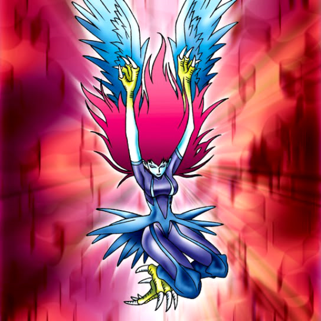

Harpie Lady

Description: "When this card is flipped face-up, Harpie's Pet Dragon increases 300 points. When strengthened with Elegant Egotist, transforms into Harpie Lady Sisters."
STATS
ATK: 1300
DEF: 1400DECK COST
Deck Cost per Card: 32EFFECT NOT IMPLEMENTED
Fusion List (23 Possible Fusions)
- Harpie Lady + Ancient Jar = Mystical Sand
- Harpie Lady + Ancient Tree of Enlightenment = Queen of Autumn Leaves
- Harpie Lady + Ansatsu = Punished Eagle
- Harpie Lady + Baby Dragon = Harpie's Pet Dragon
- Harpie Lady + Beautiful Beast Trainer = Punished Eagle
- Harpie Lady + Celtic Guardian = Punished Eagle
- Harpie Lady + Dancing Elf = Winged Egg of New Life
- Harpie Lady + Dark Plant = Queen of Autumn Leaves
- Harpie Lady + Dark Rabbit = Garvas
- Harpie Lady + Darkfire Dragon = Harpie's Pet Dragon
- Harpie Lady + Elegant Egotist = Harpie Lady Sisters
- Harpie Lady + Hane-Hane = Garvas
- Harpie Lady + Happy Lover = Winged Egg of New Life
- Harpie Lady + Hourglass of Courage = Winged Egg of New Life
- Harpie Lady + Kanan the Swordmistress = Punished Eagle
- Harpie Lady + Larvas = Garvas
- Harpie Lady + Laughing Flower = Queen of Autumn Leaves
- Harpie Lady + Princess of Tsurugi = Punished Eagle
- Harpie Lady + Swamp Battleguard = Punished Eagle
- Harpie Lady + Winged Dragon, Guardian of the Fortress #1 = Harpie's Pet Dragon
- Harpie Lady + Winged Egg of New Life = Dark Witch
- Harpie Lady + Yamadron = Harpie's Pet Dragon
- Harpie Lady + Yamatano Dragon Scroll = Harpie's Pet Dragon